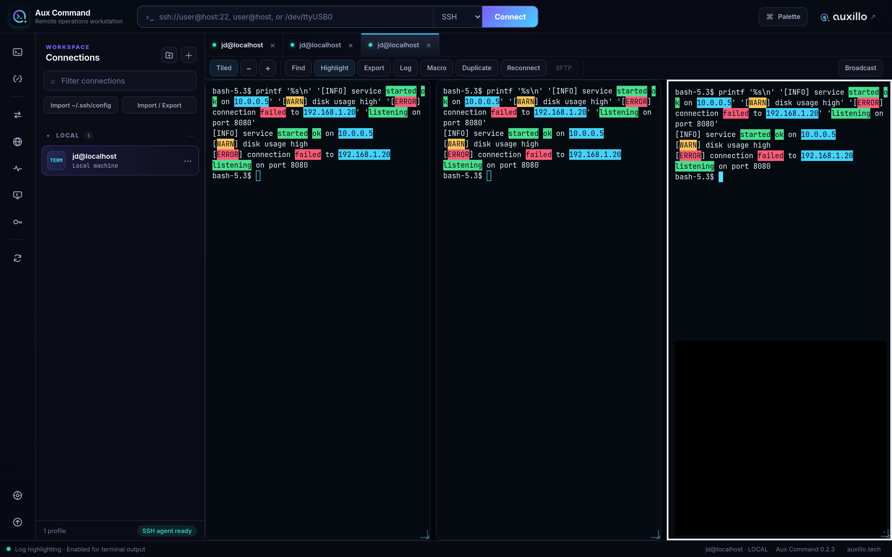
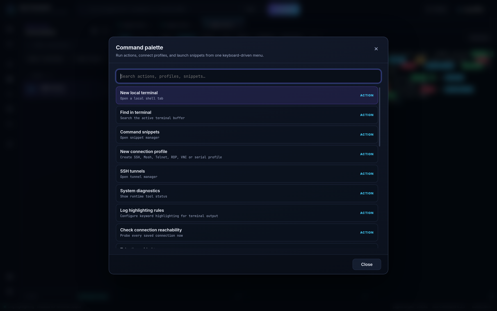
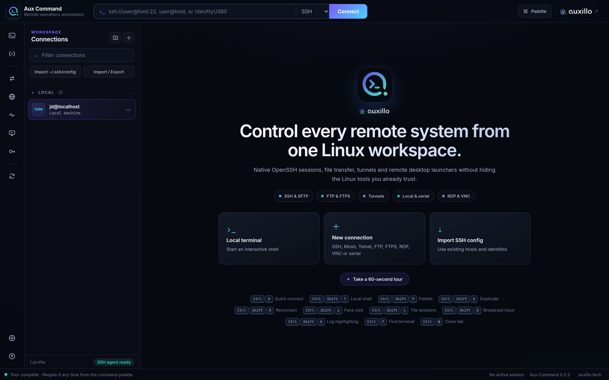

Every remote system,
one Linux workspace.
Aux Command unifies SSH, SFTP, FTP, tunnels, RDP, VNC, Mosh, Telnet and serial consoles into one polished workstation — without hiding the Linux tools you already trust.
No paid tiers. No telemetry. No account required. AppImage · .deb · .rpm · Flatpak · AUR.

Tiled terminal sessions with live keyword highlighting for log triage.
A real operations cockpit
Built for engineers who live in the terminal and manage fleets of remote systems.
Real PTY terminals
Local, SSH, Mosh, Telnet and serial sessions through a bundled Python PTY bridge — no host telnet or picocom required.
Graphical file transfer
SFTP and FTP/FTPS browsers with drag-and-drop, inline editing, atomic writes and a resumable transfer queue.
Embedded RDP & VNC
Remote desktops render right inside a tab through a hardened localhost bridge, falling back to native clients automatically.
SSH tunnels
Local, remote and dynamic forwards with multi-hop ProxyJump chains and a pinned live status cluster.
Log highlighting
Colour keywords in terminal output for instant log triage — plain text or regex, six colours, saved across restarts.
Connection health
Background reachability probes put a live up/down dot on every saved connection in the sidebar.
Command palette
Ctrl+Shift+P to search every action, connection and snippet — the whole workstation from the keyboard.
Encrypted vault
Credentials stored through the KDE Wallet / Secret Service, with host-key verification and safe profile import/export.
Tiling & broadcast
Resizable tiled panes and guarded input broadcast to run the same command across many terminals at once.
Native tools, not reinvented ones
Aux Command drives system OpenSSH, FreeRDP and TigerVNC directly with argument arrays — never a shell string. You get your distro's security policies, FIPS mode and audited clients, wrapped in a modern interface.
- OpenSSH for terminals, agent auth,
~/.ssh/configwith Include parsing - Sandboxed renderer, context isolation and a strict CSP
- Direct process spawning — no profile input ever hits a shell
- Atomic, permission-restricted credential and profile stores

Yours to run, yours to trust
100% free and open source under AGPL-3.0. No enterprise edition, no paywall, no telemetry, no account. Every release ships GPG-signed manifests and checksums so you can verify exactly what you run.
- AppImage, Debian, RPM, Flatpak and AUR packages
- GPG-signed release manifests and a published SBOM
- Bundled Inter & JetBrains Mono for identical rendering everywhere
- Guided first-run tour and a keyboard-first design

Install in one command
Pick your distribution. Optional tools (FreeRDP, TigerVNC, Mosh, Xvfb, x11vnc) unlock extra protocols and degrade gracefully when absent.
# Portable — no install needed
chmod +x Aux-Command-0.4.0-x86_64.AppImage
./Aux-Command-0.4.0-x86_64.AppImagesudo apt install ./Aux-Command-0.4.0-amd64.deb aux-command
sudo dnf install ./Aux-Command-0.4.0-x86_64.rpm aux-command
flatpak-builder --user --install --force-clean build-dir \ packaging/flatpak/tech.auxillo.command.yml flatpak run tech.auxillo.command
# From the AUR yay -S aux-command-bin # prebuilt yay -S aux-command # from source
Every artifact is verifiable with GPG-signed checksums. See the releases page.